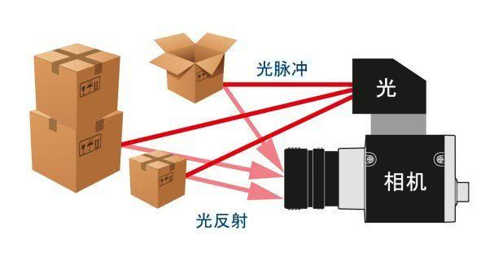
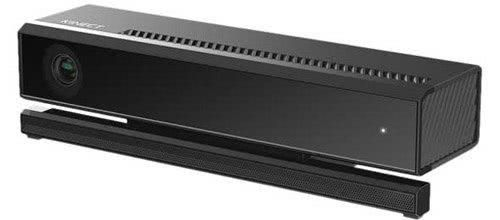
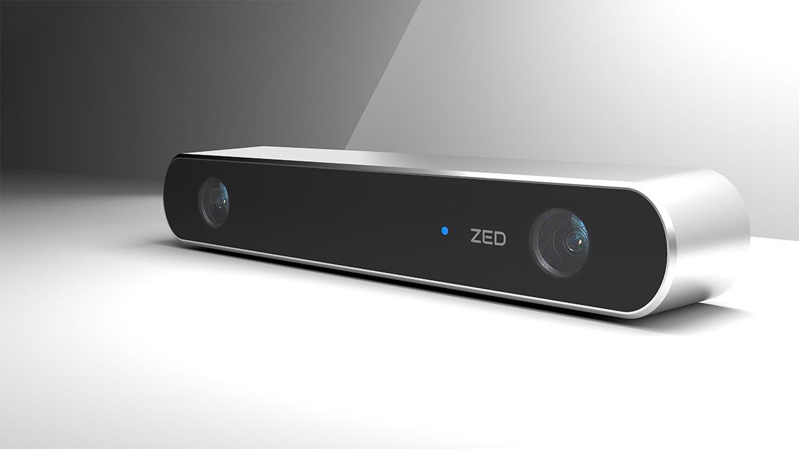

02-3D相机及分类¶
1. TOF相机¶
TOF（Time of flight）直译为飞行时间。所谓飞行时间法3D成像，是通过给目标连续发送光脉冲，然后用传感器接收从物体返回的光，通过探测光脉冲的飞行（往返）时间来得到目标物距离。

TOF相机与普通机器视觉成像过程也有类似之处，都是由光源、光学部件、传感器、控制电路以及处理电路等几部单元组成。TOF相机不仅可以获取到深度信息还可以获取到图像的灰度信息，微软kinect2即是基于TOF原理的深度相机。

TOF 相机目前的主要应用领域包括：物流行业，安防和监控，工业视觉，工业定位、工业引导和体积预估；替代工位上占用大量空间的、基于红外光进行安全生产控制的设备，医疗和生物，互动娱乐等领域。
2. 双目RGB相机¶
双相机立体视觉指仅依靠双相机的视差获取深度信息的方式。
双相机立体视觉相机因为非常依赖纯图像特征匹配，所以在光照较暗或者过度曝光的情况下效果都非常差，另外如果被测场景本身缺乏纹理，也很难进行特征提取和匹配。例如纯色的背景。

3. 结构光相机¶
结构光（Structured Light）相机是通过红外（(Infrared Radiation）发射端投射人眼不可见的伪随机散斑红外光点到物体上，每个伪随机散斑光点和它周围窗口内的点集在空间分布中的每个位置都是唯一且已知的。这是结构光的存储器中已经预储存了所有的数据。这些散斑投影在被观察物体上的大小和形状根据物体和相机的距离和方向而不同。拍摄到的斑点和已知斑点进行对比，然后获取到深度信息。
根据三种不同的距离使用了三种不同尺寸的散斑，这样的目的是为了在远中近三种距离内都能得到相对较好的测量精度：
近距离(0.8 – 1.2 m)：可以获得较高的测量精度， 中距离(1.2 – 2.0 m)：可以获得中等的测量精度， 远距离(2.0– 3.5 m)：可以获得较低的测量精度。

4. 三维扫描仪¶
三维扫描仪（3D scanner）主要有两种：拍照式扫描仪，激光扫描仪。
三维扫描仪的作用是用来创建物体表面的点云图，从而生成物体的表面形状，越密集的点云，构建出的三维形状越精确。
- 拍照式扫描仪
拍照式三维扫描仪是一种高速高精度的三维扫描测量设备，应用的是目前国际上最先进的结构光非接触照相测量原理。拍照式三维扫描仪采用了结构光技术、相位测量技术、计算机视觉技术，是一种复合三维非接触式测量技术。
它采用的是白光光栅扫描，以非接触三维扫描方式工作，全自动拼接，具有高效率、高精度、高寿命、高解析度等优点，特别适用于复杂自由曲面逆向建模， 主要应用于产品研发设计（RD，比如快速成型、三维数字化、三维设计、三维立体扫描等）、逆向工程（RE，如逆向扫描、逆向设计）及三维检测。
- 激光扫描仪
激光式扫描仪工作时，将激光线照射在物体上，通过两个相机捕捉每个瞬间的三维扫描数据，根据捕获到的不同角度的激光反射及折射，通过软件构建三维图像，由于激光扫描的频率很高，较快的扫描动作也能得到较准确的结果。使用时常需要使用反光型焦点标志贴，与扫描软件配合使用，以进行摄影测量和自动校准。
激光扫描仪是在原有拍照式扫描仪的基础上设计的，比拍照式拥有更高的精准度，可以满足更加苛刻的三维逆向建模需求。
以下分别是拍照式扫描仪（左）和激光扫描仪（右）的示例